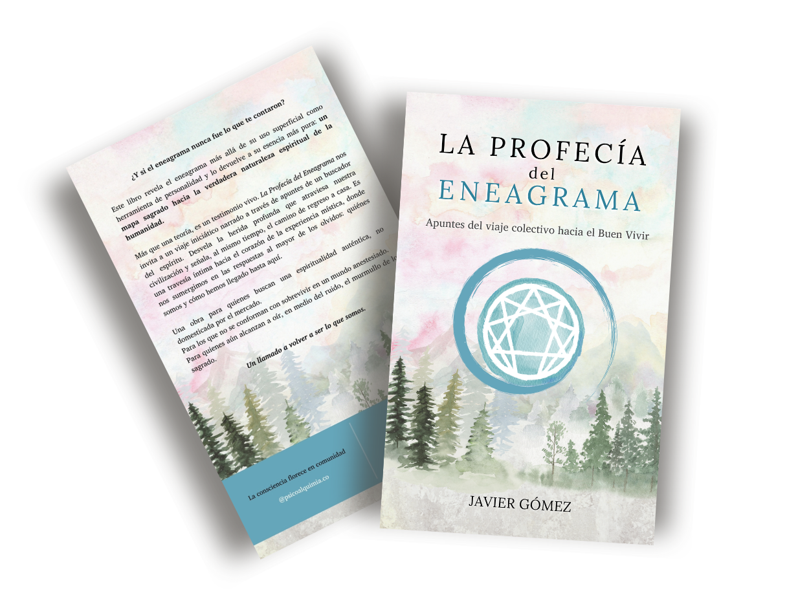

Javier Gómez
Psicoterapeuta • Explorador de la consciencia
Acompaño procesos de transformación profunda en el cruce entre psicología, mística y consciencia.
Sobre Mí
Acompaño procesos de transformación profunda. Mi trabajo se sitúa en un cruce poco habitado: el lugar donde la psicología contemporánea, la experiencia mística y el compromiso con lo colectivo dejan de ser territorios separados.
No vengo de la psicología clínica convencional. Vengo de un camino más largo y menos lineal: ocho años en Colombia, donde me formé como terapeuta gestalt integrativo y donde aprendí, al mismo tiempo, de curanderas tradicionales, de guardianes de medicinas ancestrales, y del trabajo con comunidades que han sostenido formas de saber que Occidente todavía no termina de escuchar. Trabajé en programas de psicología profunda aplicada a contextos sociales, acompañé a personas en procesos de integración psicodélica, y descubrí que la sanación individual y la transformación colectiva no son dos cosas separadas.
Estudié las disciplinas de la psicología contemporánea —trabajo informado en trauma, abordajes somáticos, terapia integrativa— pero las habito desde un lugar que es a la vez más antiguo y más nuevo. Más antiguo: la sabiduría contemplativa de las tradiciones que llevan milenios indagando qué somos —el sufismo, las prácticas indígenas, la mística cristiana, la meditación—. Más nuevo: la convicción de que esa indagación, hoy, no puede separarse de la pregunta por cómo vivimos juntos, qué construimos, qué heredamos.
Mi trabajo no busca arreglarte ni explicarte. Busca acompañarte a recordar lo que ya sabes pero has perdido de vista bajo el ruido. No vengo a imponer un mapa, sino a sostener un espacio donde el tuyo pueda dibujarse.
Soy también escritor. La Profecía del Eneagrama es mi primer libro: un ensayo contemplativo que recupera el eneagrama como mapa sagrado de despertar, lejos de su uso comercial como test de personalidad. Escribir y acompañar son, para mí, dos formas del mismo gesto: hacer espacio para que algo verdadero pueda decirse.
Trabajo en remoto desde el sur de España. Acompaño en español y en inglés.
Mi Libro
La Profecía del Eneagrama
¿Y si el eneagrama nunca fue lo que creíste que era?
En un mundo donde todo se ha convertido en mercancía —incluso lo más sagrado—, este libro revela el eneagrama más allá de su uso superficial como herramienta de personalidad y lo devuelve a su esencia más pura: un mapa sagrado hacia la verdadera naturaleza espiritual de la humanidad.
Un viaje iniciático hacia el corazón de lo que somos
La Profecía del Eneagrama no es un manual de autoayuda ni una clasificación de tipos psicológicos. Es una experiencia de despertar, narrada a través de los apuntes y las notas de campo de un buscador del espíritu, que funcionan como un verdadero ritual de autodescubrimiento.
Este libro te guiará en un sendero progresivo a través de cuatro cuadernos de viaje espiritual para revelar:
- Una inmersión profunda en el eneagrama como ciencia espiritual viva, más allá de las miradas comerciales.
- Una aproximación detallada de la experiencia mística a través del eneagrama como puerta de acceso a nuestra esencia.
- La exploración de los pilares de la sociedad actual desde una mirada enraizada en la claridad mística.
- Las posibilidades de construcción social a partir de la integración de la experiencia espiritual
Pero sobre todo, te enseñará a volver al corazón: a reconectar con la fuente de amor, sabiduría y verdad que siempre ha habitado en ti.
Cada página trabaja sutilmente con tu consciencia, invitándote a recordar lo que siempre has sido pero que, quizás, habías olvidado.

Más que teoría: una herramienta espiritual de transformación profunda
Esta obra trasciende lo psicológico para adentrarse en lo espiritual sin dejar de lado la realidad social y política de nuestro tiempo. Aquí encontrarás:
✦ Una visión revolucionaria del eneagrama como ciencia espiritual viva, no como clasificación de la personalidad
✦ Una lectura como meditación contemplativa que funciona como portales hacia estados profundos de consciencia
✦ Un abordaje crítico y enraizado que desvela los fenómenos que nos alejan de nuestra esencia
✦ Prosa y poesía entretejidas, creando una experiencia única que toca las fibras más profundas del alma
✦ Un puente entre misticismo y acción, que integra la experiencia espiritual con la construcción de realidades alternativas
Una invitación urgente a practicar espiritualidad verdadera
Este libro no ofrece respuestas fáciles ni soluciones instantáneas. En cambio, te invita a un ejercicio de consciencia profunda, a contemplar en lugar de interpretar, a escuchar el murmullo de lo esencial bajo el ruido del mundo anestesiado.
Es un testimonio vivo para quienes:
- Buscan una espiritualidad auténtica, no diseñada para el mercado
- Sienten el llamado a despertar de la ilusión colectiva
- Están list@s para emprender el viaje de regreso a sí mism@s
- Intuyen que la revolución interior es inseparable de la transformación del mundo
- Desean profundizar en cómo construir comunidades alineadas con el espíritu
Un libro que no te deja igual
"La Profecía del Eneagrama es una obra espiritual profunda que cuestiona las estructuras de poder mientras abraza la ternura como método."
Es un mapa hacia la totalidad. Una invitación a recordar. Un llamado a volver a ser lo que somos.
Para los que aún pueden oír, en medio del ruido, el murmullo de lo sagrado.
Si el libro te encuentra en un momento de profunda transformación, también puedes acompañar su lectura con un proceso de trabajo conmigo. Lo que se abre en sus páginas a veces pide ser sostenido en presencia.
Conocer el acompañamiento que ofrezcoCómo trabajamos juntos
El acompañamiento que ofrezco no busca arreglarte. Busca sostenerte mientras lo que estaba pidiendo nacer en ti encuentra su forma.
Cada espacio que comparto está pensado para una etapa distinta del camino. No todos te servirán ahora; sí lo hará alguno.
Llamada de orientación
Un espacio breve y gratuito para conocernos antes de comprometernos con un proceso. Si has llegado hasta aquí y resuenas con lo que lees, esta llamada es la puerta más sencilla para empezar.
Hablaremos de lo que estás atravesando, de lo que buscas, y de si mi forma de acompañar puede servirte en este momento. No es una sesión terapéutica — es una conversación honesta para que decidas con información, no con fantasía.
Duración: 25 minutos
Inversión: Gratuita
Sesión individual de acompañamiento
Espacio para personas que atraviesan momentos significativos y necesitan presencia, escucha profunda y orientación cuidadosa. Trabajo informado en trauma, integrando herramientas de gestalt, abordajes somáticos y diálogo con tradiciones contemplativas.
Este espacio es para ti si atraviesas:
- Una crisis existencial o un umbral vital significativo
- Un proceso de duelo, separación o ruptura con la vida que tenías
- La necesidad de integrar una experiencia mística, psicodélica o profundamente transformadora
- Un momento de reorientación vocacional o espiritual
- El despertar de preguntas que tu vida anterior ya no puede contener
Duración: 75 minutos
Inversión: 80€
Proceso de transformación profunda — 3 meses
Para quienes saben que lo que están atravesando no se resuelve en una sesión. Un acompañamiento sostenido de tres meses, pensado para procesos de reorientación vital profunda, integración de experiencias significativas, o trabajo con momentos de umbral importantes.
El proceso incluye:
- 12 sesiones individuales de 75 minutos (frecuencia quincenal o semanal según necesidad)
- Dos textos personalizados a mitad y final del proceso, como espejo y mapa de lo trabajado
- Material de lectura y prácticas contemplativas seleccionadas para tu proceso
- Un encuentro de cierre dedicado a integrar lo recorrido
Este proceso es para ti si:
- Sientes que estás atravesando un cambio estructural —no un episodio puntual
- Buscas un acompañamiento serio, sostenido y comprometido
- Necesitas espacio para una transformación que no admite atajos
Duración: 3 meses (12 sesiones)
Inversión: 950€ (pago único) o 350€/mes durante 3 meses
Plazas limitadas. Antes de iniciar el proceso confirmaremos su pertinencia en la llamada de orientación.
Solicitar procesoConecta conmigo
Si lo que has leído resuena contigo, hay tres formas de empezar:
Todas las formas son legítimas. Cada quien entra por la puerta que necesita.